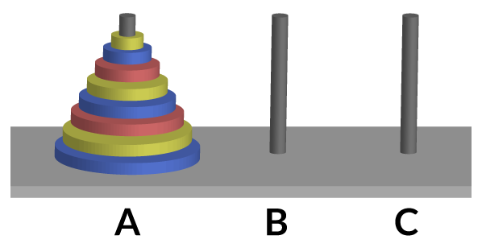

<!DOCTYPE html>
<html lang="en">
  <head>
    <meta charset="utf-8" />
    <meta name="viewport" content="width=device-width, initial-scale=1.0, maximum-scale=1.0, user-scalable=no" />

    <title>reveal-md</title>
    <link rel="stylesheet" href="./css/reveal.css" />
    <link rel="stylesheet" href="./css/theme/black.css" id="theme" />
    <link rel="stylesheet" href="./css/highlight/zenburn.css" />
    <link rel="stylesheet" href="./css/print/paper.css" type="text/css" media="print" />
    <link rel="stylesheet" href="./_assets/slides/css/filminas.css" />

  </head>
  <body>
    <div class="reveal">
      <div class="slides"><section  data-markdown><script type="text/template"><!doctype html>
<html lang="es">
<head>

    <link href='images/code.ico' rel='shortcut icon' type='image/x-icon'>
    <meta charset="utf-8">

    <title>Recursividad</title>
    <meta name="description" content="Recursividad">
    <meta name="author" content="
    Ricardo Martin Marcucci
">

    <meta name="apple-mobile-web-app-capable" content="yes">
    <meta name="apple-mobile-web-app-status-bar-style" content="black-translucent">
    <meta name="viewport" content="width=device-width, initial-scale=1.0, maximum-scale=1.0, user-scalable=no">
    <link rel="stylesheet" href="https://use.fontawesome.com/releases/v5.2.0/css/all.css" integrity="sha384-hWVjflwFxL6sNzntih27bfxkr27PmbbK/iSvJ+a4+0owXq79v+lsFkW54bOGbiDQ" crossorigin="anonymous">
    <link rel="stylesheet" href="css/reveal.css">
    <link rel="stylesheet" href="css/theme/league.css" id="theme">

    <link rel="icon" href="https://www.iua.edu.ar/wp-content/uploads/sites/6/2016/12/favicon.png" sizes="32x32" />
    <link rel="icon" href="https://www.iua.edu.ar/wp-content/uploads/sites/6/2016/12/favicon.png" sizes="192x192" />
    <link rel="apple-touch-icon-precomposed" href="https://www.iua.edu.ar/wp-content/uploads/sites/6/2016/12/favicon.png" />

    <!-- Theme used for syntax highlighting of code -->
    <link rel="stylesheet" href="lib/css/zenburn.css">
    <link rel="stylesheet" href="css/filminas.css">
    <script src="js/JSCPP.es5.min.js">__SCRIPT_END__
    <script src="js/runcpp.js">__SCRIPT_END__

    <!-- Printing and PDF exports -->
    <script>
        var link = document.createElement( 'link' );
        link.rel = 'stylesheet';
        link.type = 'text/css';
        link.href = window.location.search.match( /print-pdf/gi ) ? 'css/print/pdf.css' : 'css/print/paper.css';
        document.getElementsByTagName( 'head' )[0].appendChild( link );
    __SCRIPT_END__

    <!--[if lt IE 9]>
    <script src="lib/js/html5shiv.js">__SCRIPT_END__
    <![endif]-->
</head>

<body>

<div class="reveal">

    <!-- Any section element inside of this container is displayed as a slide -->
    <div class="slides">


<section>
    <h1>Recursividad</h1>
    

    <p>
        <small>Created by
            <a href="https://t.me/rmarku" target="_blank">
                <i class="fab fa-telegram-plane"></i>rmarku
            </a>
        </small>
    </p>
</section>


<section>
    <h2>¿Qué es la recursividad?</h2>
    <a target="_blank" href="http://www.google.com/search?q=recursividad">Google -> Recursividad</a>
</section>
<section>
    <h2>¿Qué es la recursividad?</h2>
    
</section>
<section>
    <h2>La recursividad es esto:</h2>
    <pre><code class="hljs c++" data-trim>
        int funcion(){
            funcion();
        }
    </code></pre>
    Una función que se llama a si misma.
</section>
<section>
    <h2>¿Por que una función se llamaría a si misma?</h2>
    <p>Porque es recursiva, XD</p>
    <ul>
        <li><b>Recursividad</b>:<br>
            Cualidad de recursivo.
        </li>
        <li><b>Recursivo</b>:<br>
            Que puede repetirse o aplicarse indefinidamente.
        </li>
    </ul>
</section>

<section>
    <section>
        <h3>Ejemplo</h3>
        <h2>Factorial</h2>
        <h1 style="font-size: 5em">n!</h1>
        <p>Plantiemos una solución.</p>
    </section>
    <section>
        <h2>Ejemplo: Factorial</h2>
        <h1 style="font-size: 2.5em">5! = 5 * 4 * 3 * 2 * 1 </h1>
        <h1 style="font-size: 2.5em">5! = 5 *(4 * 3 * 2 * 1)</h1>
        <h1 style="font-size: 2.5em">4! = 4 * 3 * 2 * 1</h1>
        <h1 style="font-size: 2.5em">5! = 5 * 4!</h1>
    </section>
    <section>
        <h2>Ejemplo: Factorial</h2>
        <h1>N! = N * (N-1)!</h1>

    </section>

    <section>
        <h2>Ejemplo: Factorial</h2>
        <h4>¿Facil no?<br>
            Hay solo un problema</h4>

        <h2>2! = 2 * 1!</h2>
        <h2>1! = 1 * 0!</h2>
        <h2>0! = 0 * -1!</h2>
        ¿Cuando paro?
    </section>
    <section>
        <h2>Ejemplo: Factorial</h2>
        <h2>Fijo lo siguiente</h2>
        <h2>0! = 1</h2>
    </section>
    <section>
        <h2>Ejemplo: Factorial</h2>
        <h1 style="font-size: 2em">1! = 1 </h1>
        <h1 style="font-size: 2em">2! = 2 * 1! = 2</h1>
        <h1 style="font-size: 2em">3! = 3 * 2! = 6</h1>
        <h1 style="font-size: 2em">4! = 4 * 3! = 24</h1>
        <h1 style="font-size: 2em">5! = 5 * 3! = 120</h1>
    </section>
</section>

<section>
    <h2>Recursividad</h2>
    <ul>
        <li>Es un concepto utilizado en matemática y computación</li>
        <li>Se utiliza para dar soluciones elegantes a problemas complejos</li>
        <li>Es una alternativa a los bucles de repetición</li>
    </ul>
</section>

<section>
    <h2>Función recursiva</h2>
    <ul style="font-size: 0.8em">
        <li>
            La función recursiva sabe como resolver el o los casos mas simples y un caso base.
        </li>
        <li>Si se llama a la función con el caso base, esta simplemente devuelve un resultado</li>
        <li>Si se llama sin el caso base, la función divide el problema en:
            <ul>
                <li>Una parte que sabe resolver</li>
                <li>Una parte que no sabe resolver, pero es similar al problema inicial.</li>
            </ul>
        </li>
        <li>Como este problema se parece al problema original, la función llama a una copia de si misma
            para que resuelva el problema. (llamada recursiva)
        </li>
    </ul>
</section>
<section>
    <h2>Funciones recursivas</h2>
    <p>Las funciones recursivas tienen dos partes:</p>
    <ul>
        <li>El caso Recursivo, que soluciona parte del problema y hace la llamada recursiva.</li>
        <li>El caso <b>Base</b>, el que no hace llamada recursiva.</li>
    </ul>
    <p>Una función recursiva puede tener uno o mas casos bases y una o mas llamadas recursivas.</p>
</section>
<section>
    <h2>Funciones recursivas</h2>
    <h3>Cuidados al usar recursividad</h3>
    <ul>
        <li>La recursión es poco intuitiva</li>
        <li>No hacer cosas recursivas si se puede hacer iterativa</li>
        <li>Algunas veces, la solución recursiva es la solución mas elegante y entendible.</li>
    </ul>
</section>
<section>
    <h2>Funciones recursivas</h2>
    <h3>Depurar recursividades</h3>
    <ul>
        <li>La recursion es difícil de depurar</li>
        <li>Si el caso base esta mal definido, probablemente produzca un Stack Overflow</li>
        <li>Comúnmente, la función recursiva no funciona o funciona completamente.</li>
    </ul>
</section>

<section>
    <h2>Funciones recursivas</h2>
    <h3>Como realizarlas</h3>
    <ul>
        <li>No comenzar directamente con el código, garabatear y ver si uno entiende el proceso</li>
        <li>Comenzar con el caso Recursivo</li>
        <li>Agregar el caso Base.</li>
        <li>Comúnmente, si estas "Hardcodeando" muchos casos bases, la estás complicando</li>
    </ul>
</section>
<section>
    <h2>Funciones recursivas</h2>
    <h3>Como pensar el caso Recursivo</h3>
    <ul>
        <li>Piensa en como dividirlo en un subproblema y hacerlo mas pequeño</li>
        <li>Piensa como achicar el problema y hacerlo mas simple (N-1?, N/2?, ...)</li>
        <li>Piensa en la recursividad como hacer trampa</li>
    </ul>
</section>
<section>
    <h2>Funciones recursivas</h2>
    <h3>Como pensar el caso Base</h3>
    <ul>
        <li>Piensa en cual sería el problema mas simple</li>
        <li>Piensa cual sería la solución directa de este subproblema</li>
        <li>Asegurate que la recursion converge al caso base</li>
    </ul>
</section>

<section>
    <section>
        <h3>Ejemplo Potencia</h3>

        <h1 style="font-size: 2.5em">2<sup>4</sup> =2 * 2 * 2 * 2 </h1>
        <h1 style="font-size: 2.5em">2<sup>4</sup> = 2 * ( 2 * 2 * 2 ) </h1>
        <h1 style="font-size: 2.5em">2<sup>4</sup> = 2 x 2<sup>3</sup></h1>
    </section>


    <section>
        <h3>Ejemplo Potencia</h3>
        <pre><code id="code2" class="hljs c++" data-trim contenteditable spellcheck="false">
#include &lt;iostream&gt;

unsigned long potencia(unsigned base, unsigned exp){
    return 1;
}

int main(){
    cout << "2 a la 0:  " << potencia(2,0)  << endl;
    cout << "2 a la 4:  " << potencia(2,4)  << endl;
    cout << "2 a la 8:  " << potencia(2,8)  << endl;
    cout << "2 a la 16: " << potencia(2,16) << endl;
    cout << "2 a la 32: " << potencia(2,32) << endl;
    return 0;
}
</code></pre>
        <div class="playsol">
            <button onclick="run(this);">
                <i class="fas fa-play"></i>
            </button>
            <button onclick="sol(this);">
                Solución
                <pre style="display: none;">#include &lt;iostream&gt;

unsigned long long potencia(unsigned base, unsigned exp){
    if(exp == 0){
        return 1;
    }
    return base * potencia( base, exp - 1 );
}

int main(){
    cout << "2 a la 0:  " << potencia(2,0)  << endl;
    cout << "2 a la 4:  " << potencia(2,4)  << endl;
    cout << "2 a la 8:  " << potencia(2,8)  << endl;
    cout << "2 a la 16: " << potencia(2,16) << endl;
    cout << "2 a la 32: " << potencia(2,32) << endl;
    return 0;
}
        </pre>
            </button>
        </div>
        <div class="output">

        </div>
    </section>
</section>

<section>
    <section>
        <h3>Ejemplo Fibonacci</h3>

        \[
        f(n) =
        \Bigg\{ \begin{matrix}
        0 & n = 0 \\
        1 & n = 1 \\
        f(n-1)+f(n-2) & n > 0 \\
        \end{matrix}
        \]
    </section>

    <section>
        <h3>Ejemplo Fibonacci</h3>
        <button onclick="run(this);" style="float: right;">
            <i class="fas fa-play"></i>
        </button>
        <pre><code id="code3" class="hljs c++" data-trim contenteditable spellcheck="false">
#include &lt;iostream&gt;

unsigned long fibonacci(unsigned n){
    return 1;
}

int main(){
    cout << "fib: 3  " << fibonacci(3)  << endl;
    cout << "fib: 5  " << fibonacci(5)  << endl;
    cout << "fib: 10  " << fibonacci(10) << endl;
    cout << "fib: 15  " << fibonacci(15) << endl;
    return 0;
}
</code></pre>
        <button onclick="run(this);">
            <i class="fas fa-play"></i>
        </button>
        <button onclick="sol(this);">
            Solución
            <pre style="display: none;">#include &lt;iostream&gt;

unsigned long fibonacci(unsigned n){
    if( n == 0 || n == 1)
        return n;

    return fibonacci(n-1) + fibonacci(n-2);
}

int main(){
    cout << "fib: 3  " << fibonacci(3)  << endl;
    cout << "fib: 5  " << fibonacci(5)  << endl;
    cout << "fib: 10  " << fibonacci(10) << endl;
    cout << "fib: 15  " << fibonacci(15) << endl;
    return 0;
}
        </pre>
        </button>
        <div class="output">

        </div>
    </section>
</section>
<section>
    <section>
        <h3>Ejemplo Torres de Hanoi</h3>

        
    </section>

    <section>
        <h3>Ejemplo Fibonacci</h3>
        <button onclick="run(this);" style="float: right;">
            <i class="fas fa-play"></i>
        </button>
        <pre><code id="code4" class="hljs c++" data-trim contenteditable spellcheck="false">
#include &lt;iostream&gt;

unsigned long fibonacci(unsigned n){
    return 1;
}

int main(){
    cout << "fib: 3  " << fibonacci(3)  << endl;
    cout << "fib: 5  " << fibonacci(5)  << endl;
    cout << "fib: 10  " << fibonacci(10) << endl;
    cout << "fib: 15  " << fibonacci(15) << endl;
    return 0;
}
</code></pre>
        <button onclick="run(this);">
            <i class="fas fa-play"></i>
        </button>
        <button onclick="sol(this);">
            Solución
            <pre style="display: none;">#include &lt;iostream&gt;

unsigned long fibonacci(unsigned n){
    if( n == 0 || n == 1)
        return n;

    return fibonacci(n-1) + fibonacci(n-2);
}

int main(){
    cout << "fib: 3  " << fibonacci(3)  << endl;
    cout << "fib: 5  " << fibonacci(5)  << endl;
    cout << "fib: 10  " << fibonacci(10) << endl;
    cout << "fib: 15  " << fibonacci(15) << endl;
    return 0;
}
        </pre>
        </button>
        <div class="output">

        </div>
    </section>
</section>

</div>
</div>

<script src="lib/js/head.min.js">__SCRIPT_END__
<script src="js/reveal.js">__SCRIPT_END__

<script>
    // More info https://github.com/hakimel/reveal.js#configuration
    Reveal.initialize({
        history: true,

        // More info https://github.com/hakimel/reveal.js#dependencies
        dependencies: [
            {src: 'plugin/markdown/marked.js'},
            {src: 'plugin/markdown/markdown.js'},
            {src: 'plugin/notes/notes.js', async: true},
            {src: 'plugin/math/math.js', async: true},
            {
                src: 'plugin/highlight/highlight.js', async: true, callback: function () {
                    hljs.initHighlightingOnLoad();
                }
            }
        ]
    });
__SCRIPT_END__
</body>
</html>

</script></section></div>
    </div>

    <script src="./lib/js/head.min.js"></script>
    <script src="./js/reveal.js"></script>

    <script>
      function extend() {
        var target = {};
        for (var i = 0; i < arguments.length; i++) {
          var source = arguments[i];
          for (var key in source) {
            if (source.hasOwnProperty(key)) {
              target[key] = source[key];
            }
          }
        }
        return target;
      }

      // Optional libraries used to extend on reveal.js
      var deps = [
        { src: './lib/js/classList.js', condition: function() { return !document.body.classList; } },
        { src: './plugin/markdown/marked.js', condition: function() { return !!document.querySelector('[data-markdown]'); } },
        { src: './plugin/markdown/markdown.js', condition: function() { return !!document.querySelector('[data-markdown]'); } },
        { src: './plugin/highlight/highlight.js', async: true, callback: function() { hljs.initHighlightingOnLoad(); } },
        { src: './plugin/zoom-js/zoom.js', async: true },
        { src: './plugin/notes/notes.js', async: true },
        { src: './plugin/math/math.js', async: true }
      ];

      // default options to init reveal.js
      var defaultOptions = {
        controls: true,
        progress: true,
        history: true,
        center: true,
        transition: 'default', // none/fade/slide/convex/concave/zoom
        dependencies: deps
      };

      // options from URL query string
      var queryOptions = Reveal.getQueryHash() || {};

      var options = extend(defaultOptions, {"controls":true,"progress":true,"slideNumber":true}, queryOptions);
    </script>

    <script src="./_assets/slides/js/pruebas.js"></script>
    <script src="./_assets/slides/js/init.js"></script>

    <script>
      Reveal.initialize(options);
    </script>
  </body>
</html>
